By: T09-2 Since: Feb 2019 Licence: MIT
- 1. Introduction
- 2. How to use this guide
- 3. Quick Start
- 4. Login
- 5. Daily Time Planner
- 6. Reminder
- 7. View calender & timeline
- 8. Getting wrong command suggestions
- 9. Automatically complete input command for user
- 10. Import/Export
- 11. Versioned Tasketch
- 12. Viewing help :
help - 13. Exiting the program :
exit - 14. FAQ
- 15. Command Summary
1. Introduction
Tasketch is an application that helps you to manage your everyday task by giving you an overview of all the time planned
for all the tasks in a daily manner. It also helps you to be aware of all the task deadlines too.
This application is designed for the busy NUS students who have many tasks, assignments and deadlines everyday.
Tasketch uses minimal (GUI) elements, instead opting for a faster Command Line Interface (CLI) while maintaining the
benefits of the GUI. So, if you are used to the command line, Tasketch is sure to help manage your time effectively.
This user guide will introduce the features of Tasketch and show you how to use all the command lines.
Interested? Jump to the Section 3, “Quick Start” to get started. Enjoy!
2. How to use this guide
There are several terms which we use throughout the guide. To make your understanding clearer, you can read the following section to ensure that you are able to use this user guide to the fullest.
2.1. Command Format
-
Some commands have an alias, which you can also use to execute the command e.g. to add a task to Tasketch, you can type either
addora. -
Words in
UPPER_CASEare the parameters to be supplied by the user e.g. inadd n/TASK,TASKis a parameter which can be used asadd n/Do MA1101R tutorial. -
Parameters can be in any order e.g. if the command specifies
sd/START_DATE ed/END_DATE,ed/END_DATE sd/START_DATEis also acceptable. -
The format for dates is
dd-mm-yy. For example:25-03-19means March 25th, 2019. -
The format for times is
hh.mmand it is using 24-hour clock. For example:13.00means 1 o’clock in the afternoon. -
Tags names should be alphanumeric. For example: DueSoon, CS2113TLecture
Symbols
|
Tip
|
This symbol indicates important information. |
|
Note
|
This symbol indicates things to take note. |
2.2. User Interface Layout
-
Panel A: Command Box - Commands will be typed here
-
Panel B: Result Box - Displays result for all the commands, else displays either success / error message for all other commands.
-
Panel C: Task Box - Displays list of tasks
-
Panel D: Calender - Displays month view in calender
-
Panel E: Reminder - Displays nearest tasks of certain category
-
Panel F: Day Box - Displays list of accumulated time planned for all the categories in a day
-
Panel G: Timeline - Displays timeline of all the planned tasks in a day based on the task categories.
Panel A, C, E and F are user-interactable, meaning you can scroll them up and down. Panels B, D and G are non-interactable.
Panel A will always be active, allowing you to input your commands all the time.
3. Quick Start
-
Ensure you have Java version
9or later installed in your Computer. -
Download the latest
tasketch.jarhere. -
Copy the file to the folder you want to use as the home folder for your Tasketch.
-
Double-click the file to start the app. The GUI should appear in a few seconds.
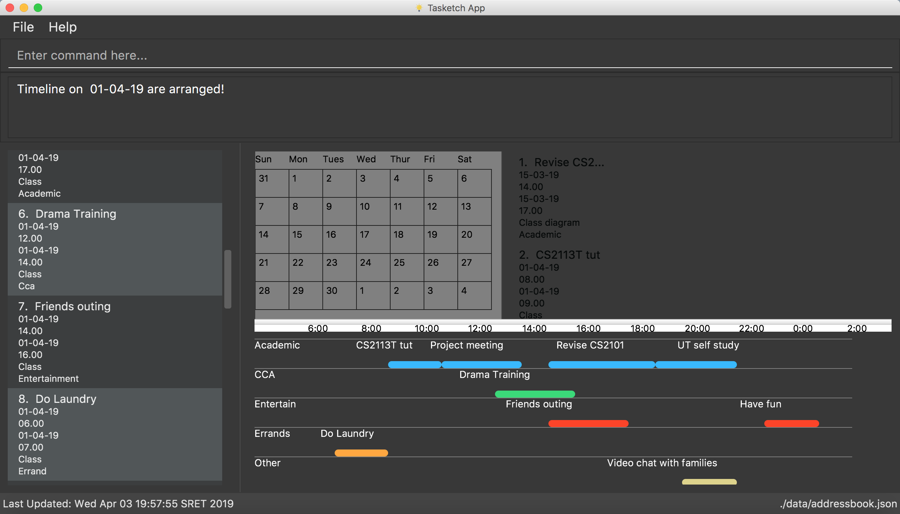 -
Before start to use Tasketch. You should first log into this app via login command. For example:
-
login u/admin p/admin
-
-
Tasketch provides a default account whose username and password are both "admin". We suggest that do not delete that account.
-
If you do not login, you can only execute following commands and other commands are locked.
-
login
-
loginstatus
-
listaccounts
-
findaccount
-
help
-
history
-
exit
-
-
Type the command in the command box and press Enter to execute it.
e.g. typinghelpand pressing Enter will open the help window. -
Some examples you can try:
-
list: lists all the tasks you have added -
addn/Do CS2113 sd/17-03-19 sd/10.00 ed/17-03-19 et/12.00 d/Do User Guide: adds a new task to Tasketch. -
delete3: deletes the task with index 3 in Tasketch. -
exit: exits the app
-
4. Login
4.1. Login
You must login to manage your Tasketch and unlock all commands.
Format: login u/USERNAME p/PASSWORD
Examples:
-
login u/admin p/admin
login with the default account if no account has logged in Tasketch.
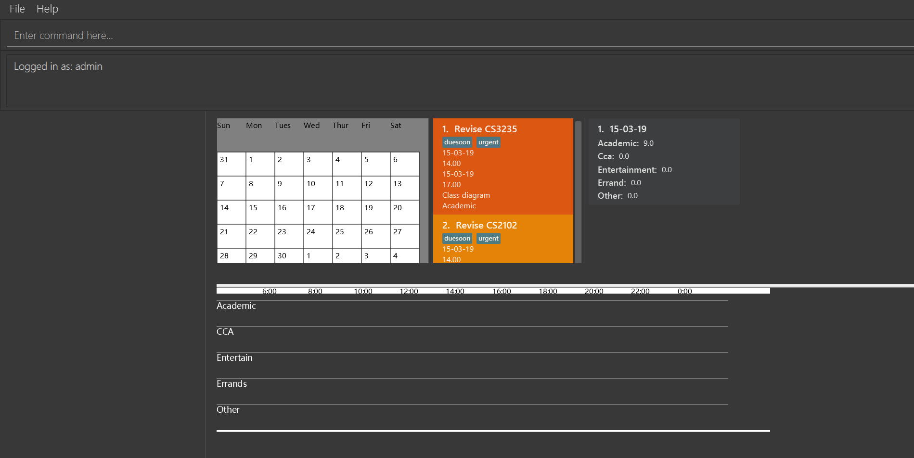 -
login u/admin p/admin
login with the default account if an account has already logged in Tasketch..
4.2. AddAccount
Add a new account to Tasketch
Format: addaccount u/USERNAME p/PASSWORD
Examples:
-
addaccount u/wan p/123456
Add a new account whose name is "wan" and password is "123456". -
addaccount u/John p/541623
Add a new account whose name is "John" and password is "541623".
Result:
You should see the account has been added to the accountlist if you execute listAccounts command(add a new account whose username is "wan" and a new account whose username is "John").
4.3. ListAccounts
Shows a list of tasks in Tasketch.
Format:
-
listaccounts
Lists all the accounts in the accountlist
Examples:
-
listaccounts
Lists all the accounts in the accountlist
Result:
You should see a list of all the accounts in the Result Box.
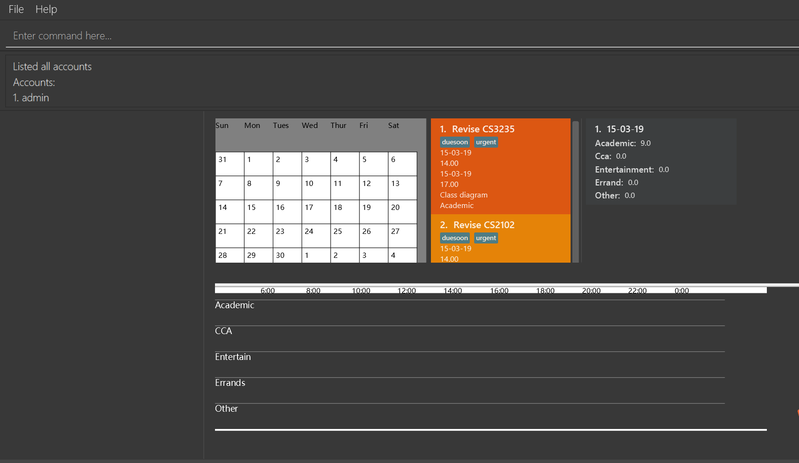
4.4. EditAccount
Edit a existed account with its username and password.
Format: editaccount INDEX u/USERNAME [p/PASSWORD]
Examples:
-
editaccount 2 p/123123
Changes the password of the second account to 123123! -
editaccount 2 u/John
Changes the username of the second account to John!
Result:
Before execute editaccount 2 u/John:
+
After execute editaccount 2 u/John:
4.5. FindAccount
Finds accounts whose username contain the given keywords.
Format: findaccount KEYWORD
Examples:
-
findaccount ad
Returnsadmin. -
findaccount AdMin
Returnsadmin.
4.6. DeleteAccount
Deletes a specified account from Tasketch.
Format: deleteaccount INDEX_NUMBER
Examples:
-
listaccounts
deleteaccount 2
Deletes the account with index number 2 in task list.
Result:
The account of the index number you choose should be delete from accountlist.
4.7. LoginStatus
Shows whether the user log in Tasketch and which account the user logged in.
Format: loginstatus
Examples:
-
loginstatus
If you do not login with any accounts, returnNot logged in. -
loginstatus
If you login with default account, returnLogged in as: admin.
4.8. Logout
Log out if you have logged in with an account.
Format: logout
Examples:
-
logout
If you do not login with any accounts, returnAlready logged out.
-
logout
If you login with default account, returnLogged out: admin.
5. Daily Time Planner
This feature will help you to monitor the time planned for different tasks in a day. By looking at the time spent on different tasks, it aims to help you to plan your time better so that you will not spend most time on specific type of a task.
5.1. Adding a task: add/a
To get started, you will need to add a task into Tasketch. The format is as below.
When you are adding a task, the app will ensure that there will be no duplicate names added. This is to ensure that there is no confusion in the task names.
|
Tip
|
Tasks can overlap each other, meaning you can have 2 tasks planned at the same period, as you can multitask. |
Adding a task with the same start date and end date means that it is a daily task, will be monitored by the Daily Time Planner. Different dates means it is a long period task, thus will not be considered as daily task but can still be added.
The app will not able to verify the correctness for the number of days in different months, so you have to ensure that
the date exists in that particular month. However, the app will able to differentiate the maximum number of days and months.
This means that you will never be able to enter more than 31 days and more than 12 months in the start date and end date.
Should you enter different start date and end date, the app will ensure that your end date is after the start date.
As for start time and end time, the app is smart enough to inform you when you have entered invalid time, such as 24.00, as this is incorrect. You will not able to enter hours beyond 23 and minutes beyond 59. The app will also ensure that the end time is after start time too. This to ensure the time spent/duration calculation (end time - start time) will result correct values. There are only 5 valid categories. (The details about it can be found in [category].)
You will also need to specify the type of category of the task that you are adding for the Daily Time Planner to monitor your time effectively.
|
Tip
|
A task can have any number of tags (including 0). |
|
Note
|
If any of the above is violated, the app will alert you that it is an invalid command with the correct format shown to
you.
|
Format: add n/TASK_NAME sd/START_DATE st/START_TIME ed/END_DATE et/END_TIME d/DESCRIPTION c/CATEGORIES [t/TAG][t/TAG]
Examples:
-
add n/CS2113 task sd/13-03-19 st/12.00 ed/13-03-19 et/14.00 d/Talk about version control c/a
Adds a task named CS2113 task in the app. It starts at 12:00 on March 13rd, 2019 and it ends at 14:00 on the same day. The description for this task is to talk about version control and its category is academic. -
add n/MA1101R tutorial sd/14-03-19 st/12.00 ed/14-03-19 et/14.00 d/Tutorial 8 c/a
Adds a task named MA1101R tutorial. It starts at 12:00 on March 14th, 2019 and ends at 14:00 on the same day. Its description is tutorial and the category is academic. -
add n/CS3235 lecture sd/13-03-19 st/08.00 ed/14-03-19 et/10.00 d/Talk about network security c/a t/important
Adds a task named CS3235 lecture. It starts at 8:00 on March 13rd, 2019 and ends at 10:00 on March 14th, 2019. Its description is to talk about network security and the category is academic. The tag for it is 'important'.
Result:
You should see the task added into the Task Box. (e.g. added a task on 15-03-19)
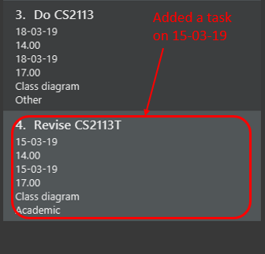
The time duration on that task will be calculated at the back and the time will be reflected in the Day Box.

5.2. Clearing tasks : clear/c
If you have done with the tasks, simply clear them from the Tasketch, so that they will not disrupt your time planning.
Format:
-
clear
Clears all the tasks in Tasketch -
clear DATE
Clears all the tasks starting from the specified date -
clear before
Clears all finished tasks.
Examples:
-
clear 21-02-19
Clears all the tasks which start from February 21st, 2019. -
clear 02-19
Clears all the tasks which start from February, 2019. -
clear before
Clears all the tasks which finished before today. -
clear
Clears all the tasks in the storage.
Result:
The tasks of your date choice should be cleared from the Task Box.
The correspond time duration for those tasks will be deducted and reflected in the Day Box.
5.3. Deleting a task : delete/d
Deletes the specified task from Tasketch.
Format: delete INDEX_NUMBER
Examples:
-
list
delete 1
Deletes the task with index number 1 in task list. -
find cs2113t
delete 1
Deletes the task with index number 1 in task list.
5.4. Editing a task : edit/e
Sometimes, you might have added a task information wrongly or wish to change its information. This command will allow you to edit all existing tasks in Tasketch.
Since the Daily Time Planner only includes tasks that start and end on the same date. Editing the start date and end date of a task will also lead to some changes.
-
Changing from same start and end date to different dates will remove the task from Daily Time Planner, its corresponding time duration will also be deducted.
-
Changing from different start and end date to same dates will make it a daily task, thus to be included into the Daily Time Planner, its corresponding time duration will also be added.
-
Maintaining the same start and end dates but changed the start or end time of a task. Its time duration changes will also be updated in the Daily Time Planner.
Format: edit TASK_ID [n/NAME] [st/START_TIME] [et/END_TIME] [d/DESCRIPTION]
Examples:
-
edit 1 st/12.00 et/14.00 t/GET1018
Edits the start time and end time of the task with ID 1 to be12.00and14.00respectively. Change the topic toGET1018.
Result:
The information edited for that task will be updated and reflected in the Task Box.
The day related to that edited task will be updated and reflected in the Day Box.
5.5. Searching tasks by keywords: find/f
Finds tasks whose topic or description contain any of the given keywords.
Format: search KEYWORD [MORE_KEYWORDS] …
Examples:
-
find CS2113T
ReturnsCS2113T lecture -
f Lecture
ReturnsCS2113T lectureandCS3235 lecture
5.6. Listing all tasks : list/l
Shows a list of tasks in Tasketch.
Format:
-
list
Lists all the tasks in the storage -
list td
List all the tasks whose start date is today -
list DATE
Lists all the tasks whose start date is that specific date -
list CATEGORY
Lists all the tasks of the specified category.
Examples:
-
list a
Lists all the tasks of academic category. -
list 02-19
Lists all the tasks which starts in February, 2019 -
list 20-02-19
Lists all the tasks which starts on February 20th, 2019 -
list
Lists all the tasks in the storage
Result:
You should see a list of tasks in the Task Box.
5.7. Showing time planned for all task categories : showtime
To help you to plan and make full use of your daily time better, simply use this command to see all the time planned on all 5 categories for every day.
5.7.1. Showing all the days
If you want to the time planned for everyday, just use this command.
Format: showtime
Result:
You should see a list of days with all the category times in the Day Box as shown below.
5.7.2. Showing a particular day
If you want to see only one specific day, simply add the date that you wish to see behind the command.
Format: showtime DATE
Example: showtime 15-03-19
Result:
You should see a day of your choice with all the category times in the Day Box, if the date exists, else it will be empty.
If you input anything that is invalid like showtime sfsf, error message will be prompted with the correct usage.
6. Reminder
6.1. Reminding the users of the nearest task : remind
Shows to the user the nearest tasks of certain category.
Format:
-
remind start
Reminds the users of the most recently begin tasks of all categories. The reminded tasks should be in colored task cards. -
remind ddl
Remind the users of the most recent deadline of all categories. The reminded tasks should be in colored task cards.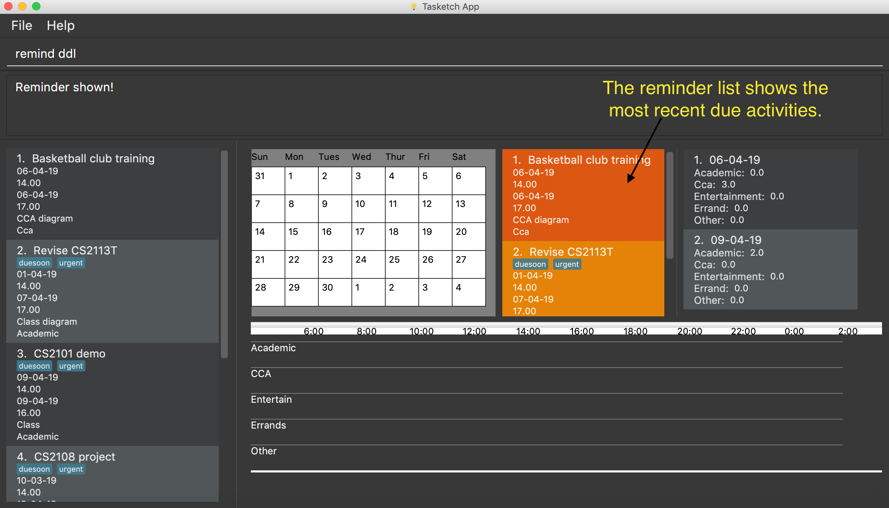 -
remind a/e/c/r/o ddl/start
Remind the users of most recent start tasks or deadline of specified category.
|
Note
|
"a" - Academic "e" - Entertainment "c" - Co-Curricular Activity (CCA) "r" - Errand "o" - Other |
Examples:
-
remind c start
Shows a list of nearest start CCA activities.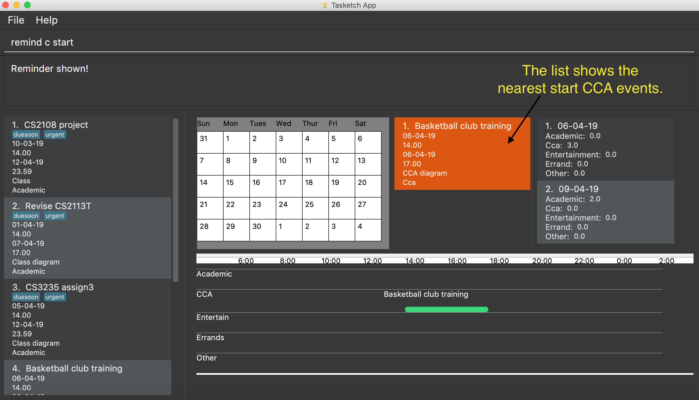 -
remind a ddl
Shows a list of nearest deadlines of academic activities.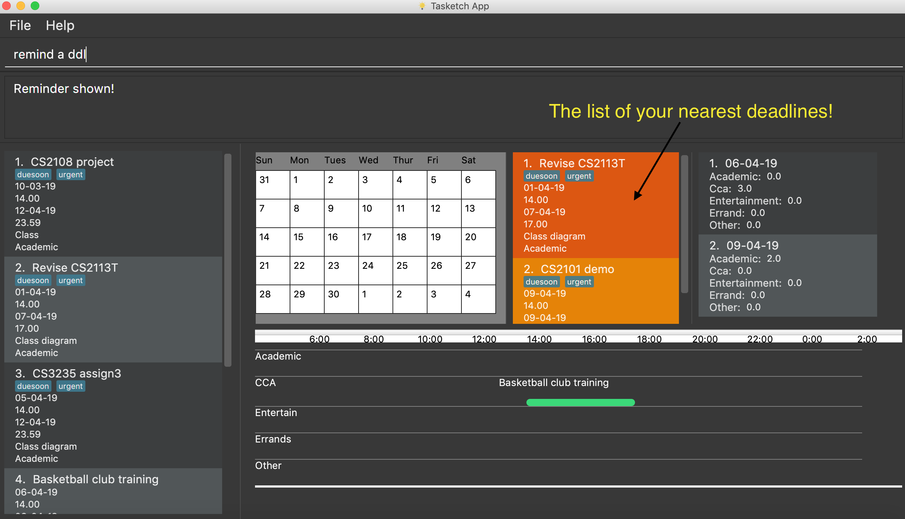
7. View calender & timeline
7.1. Set the calendar to desired month : month
Shows the desired month to the user. Noted that only previous month and next month will be shown.
e.g. Current month is April, then only March and May can be shown.
|
Tip
|
The feature for changing the background color of each day on the calendar will come in v2.0! |
Format:
-
month +
Changes the current calendar to next month.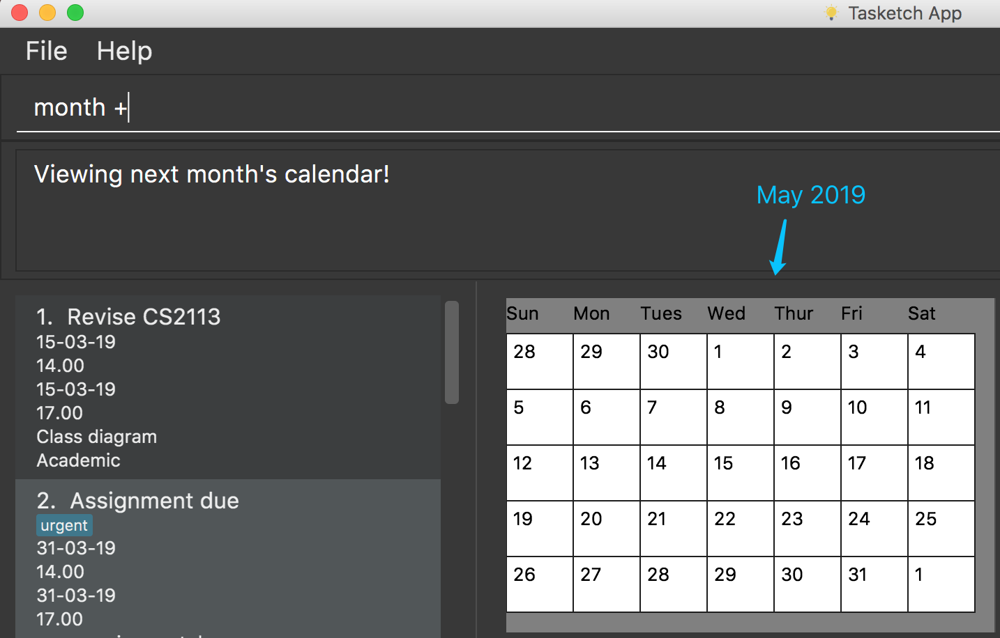 -
month -
Changes the current calendar to previous month. -
month
Show current month’s calendar.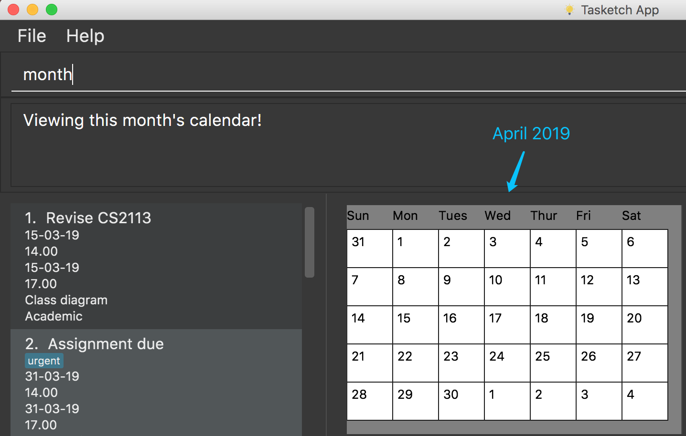
7.2. Shows the timeline of a specific day to the user : timeline
timeline command will arrange the tasks on one day to real timelines.
Noted that if there are multiple tasks at the same time under same category, the timeline will only display one task name and time period. e.g Academic task1: 12:00-14:00, Academic task2: 12:00-15:00 (in one day). The academic timeline will only show 12:00-15:00 is reserved.
-
timeline
Shows the timeline of today by default. -
timeline [DATE]
Shows the timeline of that date.
|
Note
|
After adding or editing a task, user needs to retype timeline [DATE] to refresh the timeline.This implementation is to make sure this feature is not purely part of UI. |
Examples:
-
timeline
Shows the timeline for today.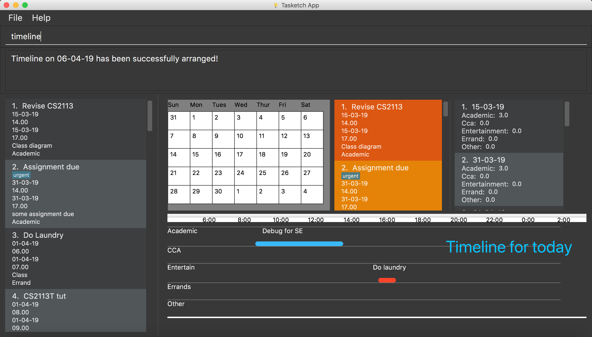 -
timeline 01-04-19
Shows the whole timeline for 1st April 2019.
|
Tip
|
Timeline will only show the tasks between 6:00am to 24:pm. Sleeping early is a good habit~ |
8. Getting wrong command suggestions
There so many commands in the app, so to help you to use the app easier, it will tell you what you have typed wrongly automatically,
by giving a list of closest approximations of word through the message box after pressing enter.
Examples：
-
If you want to type
clearbut typedclarrinstead, the system will tell you that it is an unknown command, and would suggest the commandclearinstead.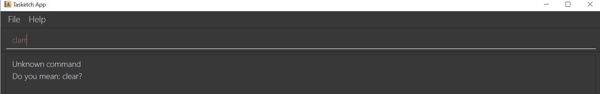 -
If you want to type
exitbut typedecotinstead, the system will tell you that it is an unknown command, and would suggest the commandexitandeditinstead.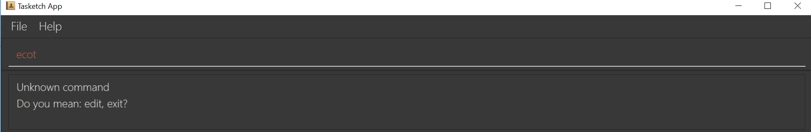 -
If you want to type
historybut typedhsitryoinstead, the system will tell you that it is an unknown command, and would suggest the commandhistoryinstead. Although there are more than 2 alphabets different from the correct command, the system will smartly show the suggestion becausehsitryohas the same alphabets withhistory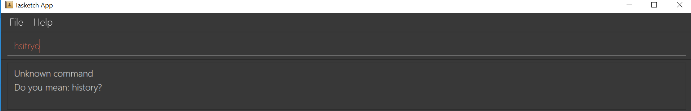
9. Automatically complete input command for user
If you type something wrongly, the app will automatically correct type error and fulfill their incomplete typed command in command line.
Examples：
-
If you want to type
list, you can typeliinstead, and pressTABon keyboard. The system will automatically fulfill the command in command line withlist. -
If you want to type
history, but you typehistoeinstead, and presstapon keyboard. The system will automatically fulfill the command line withhistory. -
If you want to type
add, but you typeaefwinstead, and presstapon keyboard. The system will automatically fulfill the command line withNo command matched.
10. Import/Export
This feature allows you to import an existing json file which contains your other tasks in Tasketch. Also, it supports the product to export what you have in the Tasketch to a json file if you want.
10.1. Export tasks displayed: export
You can save all tasks or filtered tasks into a json file. It can be used with list or find.
Format: export FILENAME.json [CATEGORY]
Examples:
-
find Revise
export revise.json
Exports all tasks which are named with keyword "Revise" in revise.json. -
export academic.json a
Exports all academic tasks into academic.json. -
list 13-03-19
export 13-03-19.json
Exports all tasks which starts on March 13, 2019 in 13-03-19.json. -
export Tasketch.json
Exports all tasks which are shown on the left list in Tasketch.json.
|
Note
|
|
10.2. Import tasks: import
If you have a classmate who have the same module with you, and you forget to add any related task into Tasketch. There are a brunch of tasks in this module. In this case, you do not need to add them one by one. Instead, you can simply ask your friend to export all tasks about this module and send the file to you. What you have to do is just simply import it.
Format: import FILENAME.json
Examples:
-
import revise.json
Imports all tasks in revise.json into Tasketch.
|
Note
|
|
11. Versioned Tasketch
This feature will help you to check all the commands you have typed into Tasketch. Besides, it gives you a chance to regret your previous attempts when playing with Tasketch.
11.1. Listing entered commands : history/h
Lists all the commands that you have entered in reverse chronological order.
Format: history
11.2. Undoing previous command : undo/u
Restores the Tasetch to the state before the previous undoable command was executed.
Format: undo
Examples:
-
delete 1
list
undo(reverses thedelete 1command) -
delete 1
clear
undo(reverses thedelete 1command)
undo(reverses theclearcommand)
11.3. Redoing the previously undone command : redo/r
Reverses the most recent undo command.
Format: redo
Examples:
-
delete 1
undo(reverses thedelete 1command)
redo(reapplies thedelete 1command) -
delete 1
redo
Theredocommand fails as there are no undo commands executed previously. -
delete 1
clear
undo(reverses theclearcommand)
undo(reverses thedelete 1command)
redo(reapplies thedelete 1command)
redo(reapplies theclearcommand)
12. Viewing help : help
In case you are clueless, you can always use this command get help on all the commands available and their functions.
Format: help
13. Exiting the program : exit
If you are done using the app, you just use this command to exit and close the app.
Format: exit
13.1. Saving the data
Tasketch data is saved in the hard disk automatically after any command that changes the data.
There is no need to save manually.
14. FAQ
Q: How do I transfer my data to another Computer?
A: Install the app in the other computer and overwrite the empty data file it creates with the file that contains the data of your previous Address Book folder
15. Command Summary
-
Add :
add n/TASK_NAME sd/START_DATE st/START_TIME ed/END_DATE et/END_TIME d/DESCRIPTION [c/CATEGORY] [t/TAG]…
e.g.add n/CS2113 sd/13-03-19 st/12.00 ed/13-03-19 et/14.00 d/Talk about version control c/a -
Clear :
clear [DATE]
e.g.clear 21-02-19 -
Delete :
delete INDEX_NUMBER
e.g.delete 1 -
Edit :
edit INDEX_NUMBER [s/START_TIME] [e/END_TIME] [t/TOPIC] [d/DESCRIPTION]
e.g.edit 1 s/12.00 e/14.00 t/GET1018tut -
Find :
find KEYWORD [MORE_KEYWORDS]
e.g.find CS2113T -
List :
list [DATE]
e.g.list 02-19 -
Remind :
remind [category] start/end
e.g.remind a ddl -
Showtime :
showtime [DATE]e.g.showtime 13-02-19 -
History :
history -
Undo :
undo -
Redo :
redo -
Help :
help -
Exit :
exit